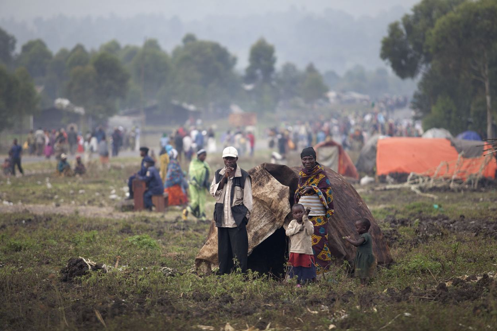
Aide d'urgenceEn coursKits essentiels pour les familles déplacées
Abris, vivres, kits d'hygiène et articles ménagers pour 2 500 ménages dans les sites de déplacement.
Collecté 36 000 $Objectif 50 000 $
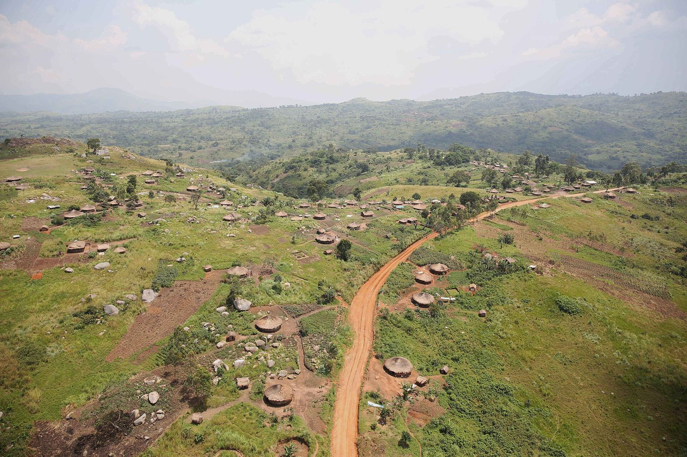
Des réponses concrètes, suivies et évaluées, dans les provinces les plus touchées de la RD Congo.
Filtrez par statut pour découvrir les projets en cours, achevés ou planifiés.

Aide d'urgenceEn coursAbris, vivres, kits d'hygiène et articles ménagers pour 2 500 ménages dans les sites de déplacement.
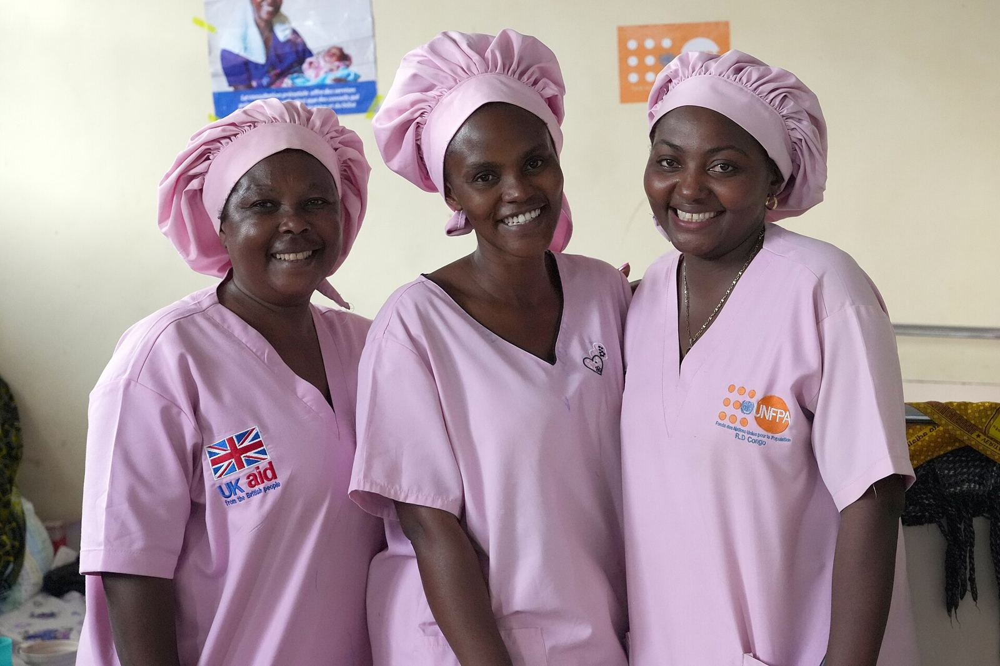
Santé mentaleEn coursGroupes de parole, counseling et accompagnement psycho-spirituel pour les femmes affectées par les violences.
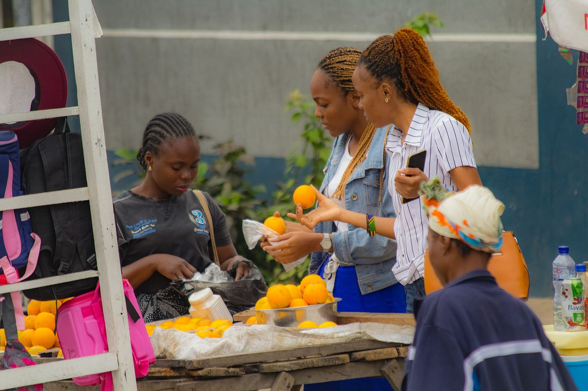
Socio-économiqueEn coursGroupes d'épargne, formation en gestion et kits de démarrage pour 300 femmes chefs de ménage.
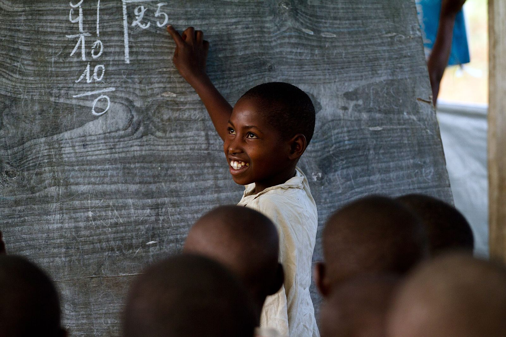
ÉducationAchevéFrais scolaires, fournitures et classes de rattrapage ; 92 % des enfants ont terminé l'année scolaire.
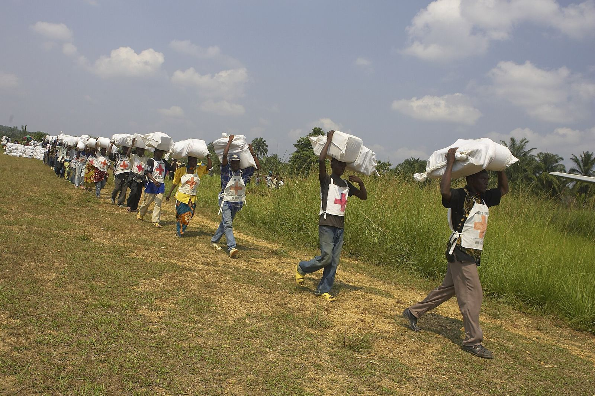
Aide d'urgenceAchevéVivres pour 1 200 ménages déplacés pendant trois mois, en partenariat avec les églises locales.
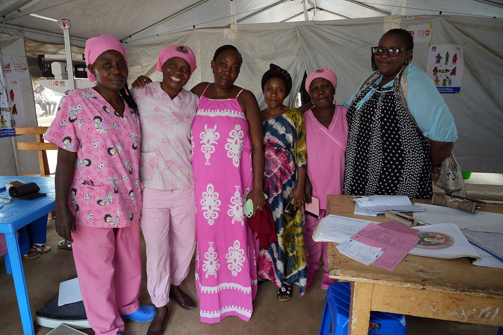
LeadershipAchevéNeuf mois de formation et de mentorat pour 45 pasteurs, femmes leaders et responsables de jeunesse.
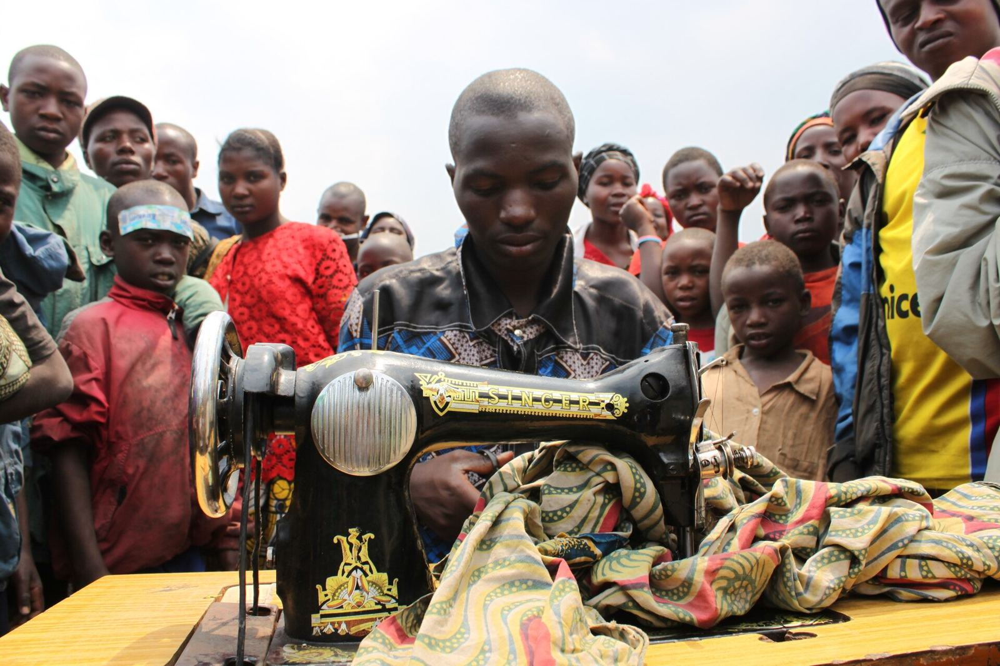
Formation professionnellePlanifiéCouture, menuiserie, électricité et informatique pour 200 jeunes par an, avec kit d'installation.
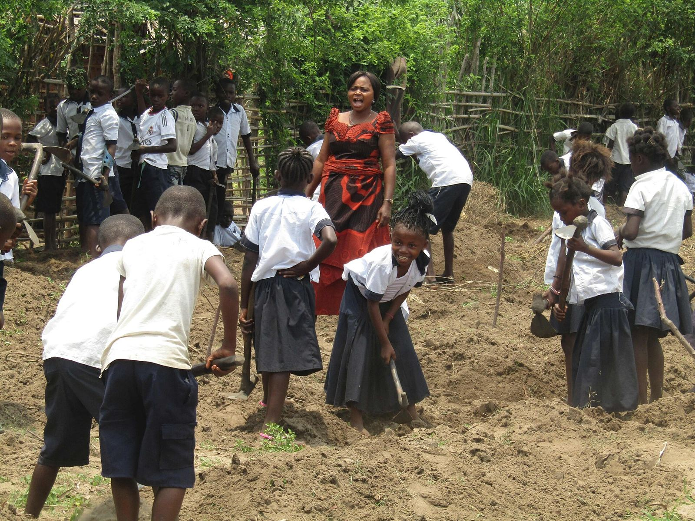
ÉducationPlanifiéRéhabilitation de trois écoles, formation des enseignants et cantines alimentées par des potagers.
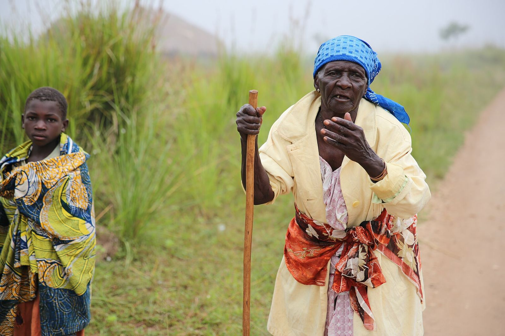
Santé mentalePlanifiéFormer 60 aidants issus des églises pour offrir une première écoute dans les villages isolés.
Cliquez sur une zone pour la localiser sur la carte.
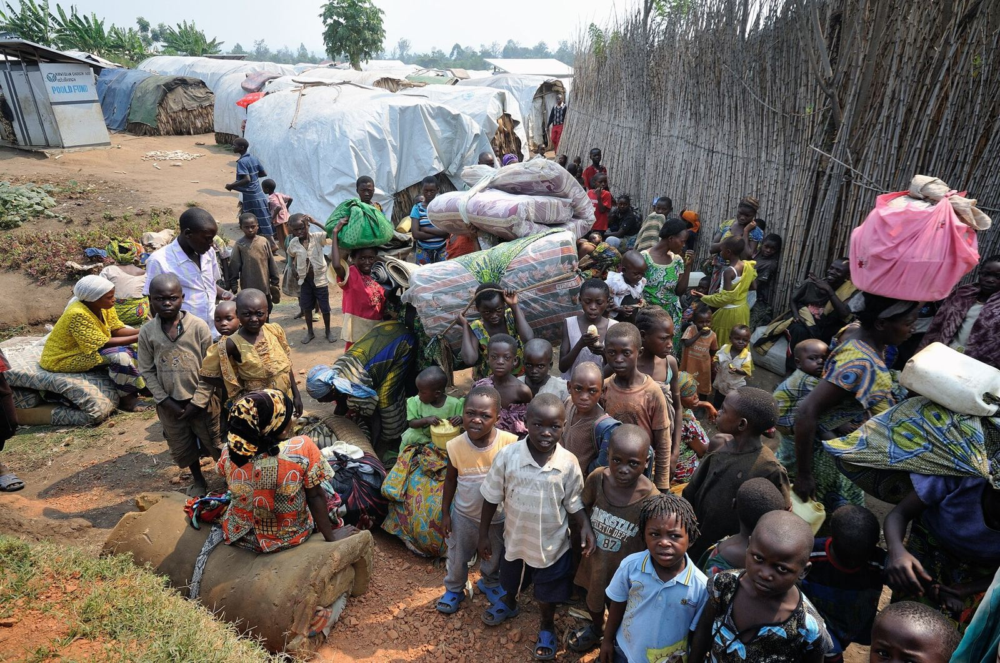
Entreprises, églises, fondations : devenez partenaire d'un projet et suivez son impact.